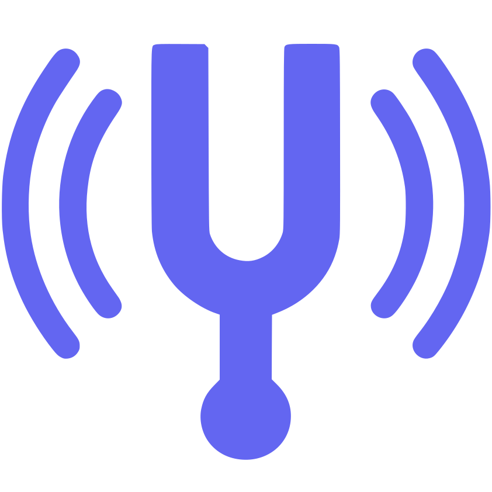

True Resonance
Music tuning in real-time
Enable
Pitch Only
Tuning by
Pitch Only
keeps the speed unchanged, but the audio can sound slightly less clean.
Speed & Pitch
Tuning by
Speed & Pitch
is very accurate but it also changes the playback speed and any later speed changes in YouTube will shift the pitch again.
432 Hz
528 Hz
Reset to 440 Hz